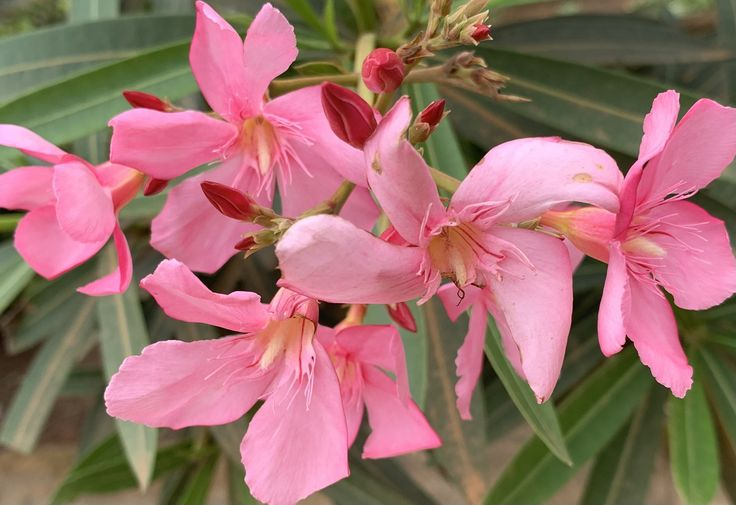
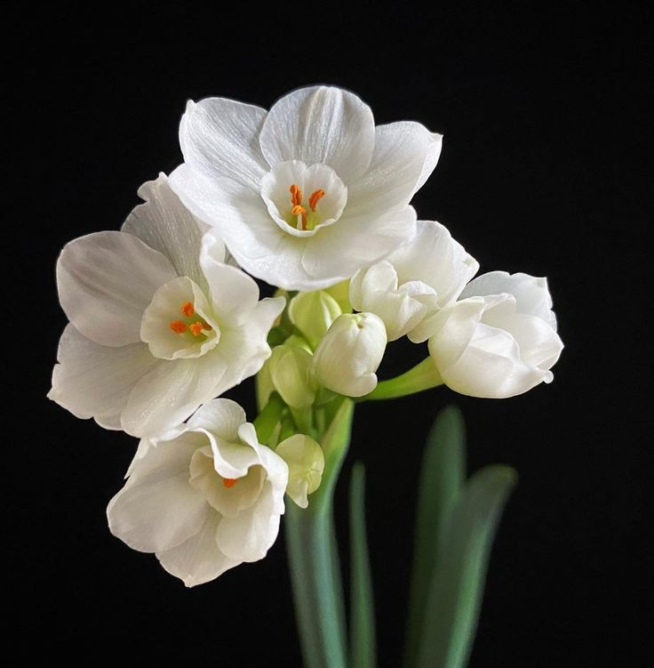
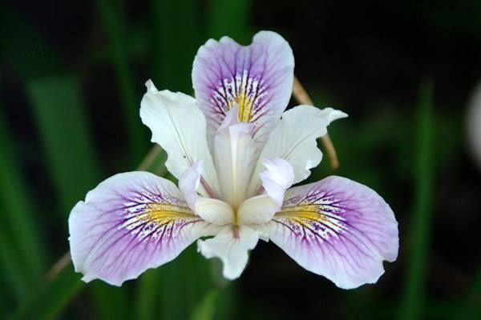
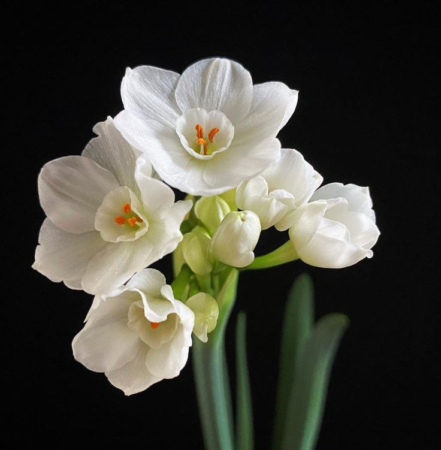
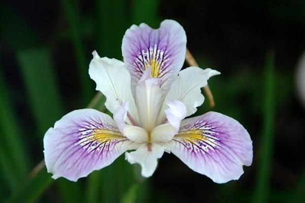
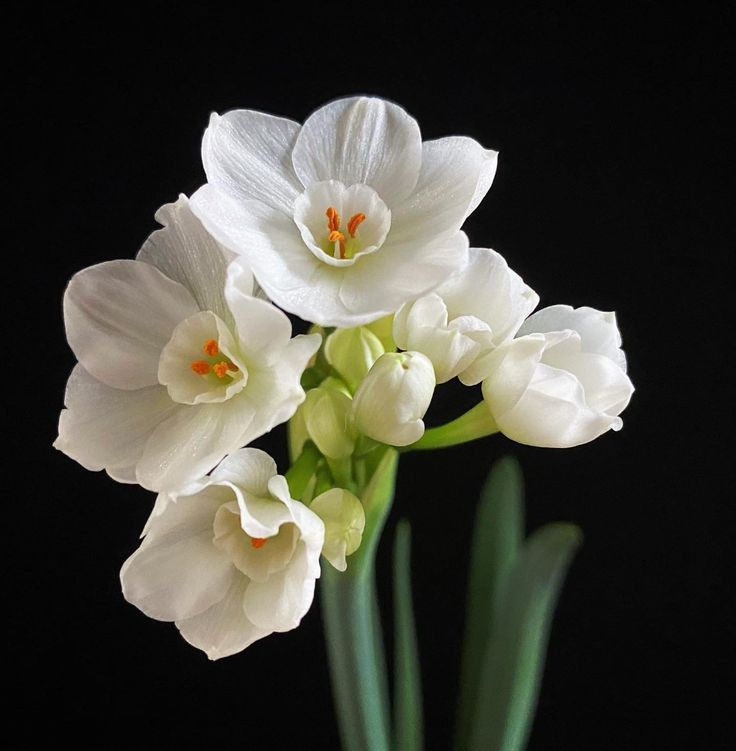
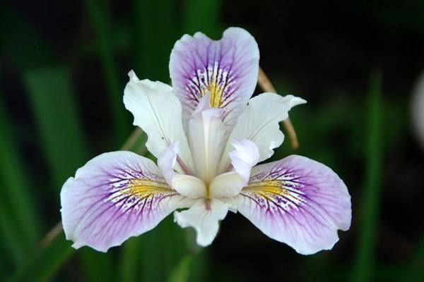
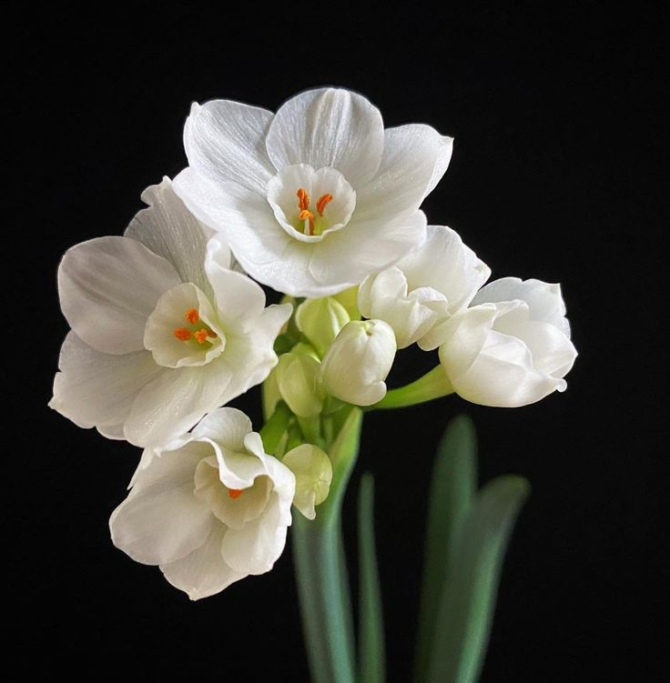
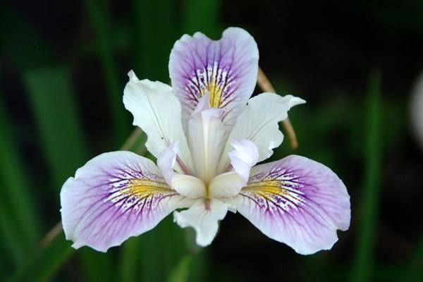

📸 Fotoğraf ve Video Galerisi

 





50'den fazla çiçeğin gizemli dünyasını keşfedin.
Bu web sitesi, doğanın en güzel armağanı olan çiçekleri tanıtmak amacıyla hazırlanmıştır. Sitemizde çiçeklerin hem manevi anlamlarını hem de geleneksel tıpta bilinen şifalı yönlerini bulabilirsiniz.
Amacımız, unutulmaya yüz tutmuş bitki bilgilerini modern bir arayüzle sunmaktır.

